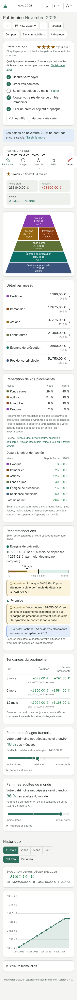
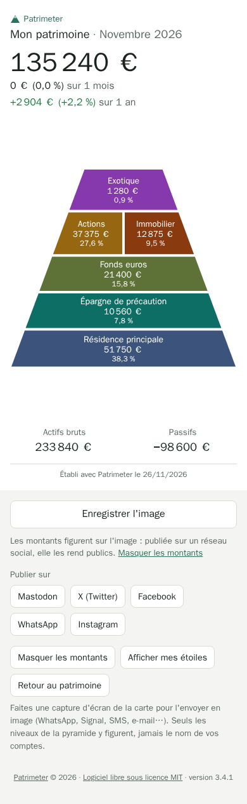
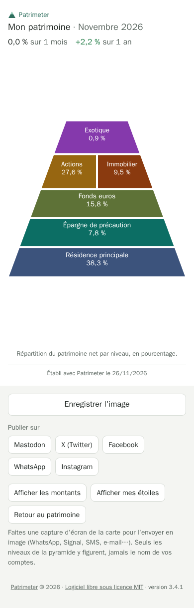

Patrimoine et historique¶
Patrimoine¶
La page Patrimoine, premier menu et page d'accueil, montre le patrimoine net du mois et sa pyramide. Le cadre du patrimoine net rappelle aussi votre niveau des défis et votre nombre d'étoiles, avec un lien vers eux ; les boutons Comptes et Biens immobiliers, en haut, mènent à ce qui le compose, et Indicateurs à vos propres totaux (indicateurs).
| Niveau | Exemples |
|---|---|
| Résidence principale | Votre résidence, et son crédit |
| Épargne de précaution | Compte courant, livrets |
| Fonds euros | Fonds euros d'assurance-vie |
| Actions | PEA, compte-titres, unités de compte |
| Immobilier | Biens locatifs, SCPI |
| Exotique | Cryptoactifs, or et autres métaux précieux, bijoux, montres, œuvres d'art, vins, voiture, moto, placements atypiques |
Chaque niveau affiche sa valeur nette (ses actifs moins les crédits qui lui sont rattachés) et sa part du total. Les flèches et le sélecteur changent de mois. Tant qu'aucun compte n'existe, la page reste sur le mois en cours, celui où vous créez vos premiers comptes : ni flèches ni sélecteur (de même pour la saisie du mois).
Survoler un niveau de la pyramide, ou cliquer dessus, surligne ses lignes dans les autres cadres (Détail par niveau, Répartition de vos placements, Depuis le début de l'année) : fond teinté et barre à gauche, les autres niveaux de la pyramide pâlissent. Un clic garde le surlignage ; un second clic, un clic ailleurs ou Échap le retire. À l'inverse, survoler une ligne ou y arriver au clavier surligne son niveau dans la pyramide.

Règles de calcul :
- la valeur d'un compte pour un mois est son relevé de ce mois, sinon son dernier relevé antérieur (reporté) ;
- un compte compte à partir du mois de son ouverture, et jusqu'au mois qui précède sa clôture.
Dans un compte famille, un choix en tête de page montre toute la famille, un membre ou ce compte ; il vaut aussi pour le rapport et le budget.
Tendances du patrimoine¶
Sous les recommandations, Tendances du patrimoine donne l'évolution du patrimoine net sur 3, 6 et 12 mois jusqu'au mois affiché (et ce que cela fait par mois), à côté de celle de la même durée juste avant : votre patrimoine progresse-t-il plus vite ou moins vite qu'avant ?
À partir du 20 du mois, si aucun solde du mois en cours n'est saisi, la page le rappelle en tête, avec un lien vers la saisie.
Partager un rapport¶
Pour montrer votre patrimoine à des proches, Partager (à côté du choix du mois) ouvre un rapport du mois : une carte sans menu, avec le patrimoine net, son évolution sur 1 mois et sur 1 an, la pyramide, les actifs bruts et les passifs. Sur téléphone, elle occupe tout l'écran : une capture d'écran la montre seule.

- Le rapport ne montre que les niveaux de la pyramide, jamais le nom de vos comptes ni de vos banques.
- Masquer les montants ne garde que les pourcentages : la répartition et l'évolution, sans dévoiler les sommes. Afficher les montants les remet.
- Afficher mes étoiles ajoute, sous la pyramide, vos étoiles et votre niveau des défis (« ★ 15 étoiles · niveau 4 : Prévoyant »), sur la carte et sur l'image ; jamais un montant. Proposé seulement pour votre propre patrimoine, défis activés ; Masquer mes étoiles les retire.
- Le rapport suit le mois choisi sur la page Patrimoine, et le thème clair ou sombre de l'écran.
- Rien n'est publié ni envoyé par Patrimeter : la page reste réservée à votre compte, seule l'image que vous partagez quitte votre appareil.
Sous la carte, Patrimeter en fait une image (PNG de 1080 × 1350 pixels, le format portrait d'Instagram), dans votre navigateur :
- Partager l'image… ouvre le partage du téléphone (ou de l'ordinateur, s'il le propose) : choisissez l'application, Instagram, WhatsApp, Mastodon, Signal…
- Enregistrer l'image la télécharge.
- Publier sur Mastodon, X (Twitter), Facebook, WhatsApp ou Instagram : sur téléphone, le partage du téléphone
s'ouvre avec l'image ; sur ordinateur, l'image est enregistrée et le réseau s'ouvre dans un nouvel onglet, avec un
court texte pour Mastodon, X et WhatsApp : ajoutez-y l'image enregistrée. Pour Mastodon, indiquez votre instance
(par exemple
mastodon.social) ; le navigateur s'en souvient. - Avec les montants, un avertissement le rappelle : publiée sur un réseau social, l'image les rend publics. Masquer les montants avant de partager ne laisse que les pourcentages.

Répartition de vos placements¶
Sous la pyramide, un tableau compare la part de chaque niveau dans vos placements à un repère : l'allocation « équilibrée » d'Avenue des Investisseurs (mise à jour du 7 février 2026), dont s'inspire la pyramide du patrimoine.
| Niveau | Repère |
|---|---|
| Fonds euros | 45 % |
| Actions | 25 % |
| Immobilier | 25 % |
| Exotique | 5 % (10 % au plus) |
- Les placements sont la somme de ces quatre niveaux, crédits déduits. La résidence principale (socle de la pyramide) et l'épargne de précaution (environ trois mois de dépenses) n'ont pas de pourcentage.
- C'est un repère indicatif, et non un conseil en investissement : la bonne répartition dépend de votre horizon et de votre goût du risque.
- Sans placement positif, le tableau n'est pas affiché.
Depuis le début de l'année¶
Sous la source du repère, un second tableau montre ce qui a été mis ou retiré dans chaque niveau de la pyramide depuis le début de l'année, puis pour le patrimoine net : la valeur nette du mois choisi moins celle de fin décembre de l'année précédente (ou de janvier, si vos relevés commencent cette année). Il donne un aperçu de l'épargne de l'année.
- Patrimeter ne connaît que des soldes : la variation comprend aussi les plus-values et moins-values (actions, immobilier…) et, pour les niveaux qui ont un crédit, le capital remboursé.
- Une hausse s'affiche avec un signe +, une baisse avec un signe − : le sens ne repose pas sur la couleur.
Recommandations¶
À droite de la répartition de vos placements, l'encadré Recommandations lit la pyramide du mois avec votre budget du même mois.
- Épargne de précaution : son montant rapporté aux dépenses mensuelles du budget (besoins et envies, épargne non
comprise), en mois de dépenses, sur une jauge :
- la piste est découpée en trois zones : moins d'un mois, sous la cible du foyer, de la cible à son double ;
- la barre s'arrête au nombre de mois couverts, le trait marque la cible (3 mois par défaut, à régler dans Foyer fiscal et catégories) ;
- un constat accompagne la jauge : Alerte sous un mois de dépenses, Attention sous la cible (avec le montant qui manque), Bon point une fois la cible atteinte, À noter au-delà du double de la cible (l'excédent pourrait être placé plus haut dans la pyramide).
- Sans budget pour ce mois, Patrimeter ne connaît pas vos dépenses : l'encadré invite à saisir le budget, et signale une Alerte si l'épargne de précaution est vide.
- Pyramide : la pyramide se construit par la base. Une remarque signale des actions ou des placements exotiques détenus alors que l'épargne de précaution n'atteint pas sa cible, un niveau négatif (crédits supérieurs à la valeur des biens), et l'écart le plus marqué avec le repère de répartition, à partir de 15 points. Sans remarque : « Rien à signaler ».
Chaque constat porte un mot et une icône, en plus de sa couleur. Ce sont des repères indicatifs, et non un conseil en investissement.
Votre place parmi les ménages français¶
Sous le détail par niveau, deux cartes côte à côte (l'une sous l'autre sur un téléphone) situent votre patrimoine. Celle de gauche situe votre patrimoine net du mois parmi celui des ménages français : « votre patrimoine net dépasse celui d'environ 63 % des ménages », votre décile, et une échelle des moins dotés aux mieux dotés, avec la médiane marquée. Repères et source détaille les seuils.
- Référence : Insee, enquête Histoire de vie et Patrimoine 2023-2024, patrimoine net des ménages début 2024 (médiane : 148 100 € ; 10 % les mieux dotés : plus de 750 400 € ; 1 % : plus de 2 728 900 €).
- Entre deux seuils publiés, la place est estimée en ligne droite.
- La comparaison porte sur des ménages : si vous ne suivez que votre part, et non le patrimoine de tout votre foyer, votre place est sous-estimée. L'Insee ne compte ni les biens durables (voiture, mobilier), ni les objets de valeur, ni les droits à la retraite.
- Le calcul se fait sur votre serveur : rien n'est envoyé ailleurs.
Votre place parmi les adultes du monde¶
La carte de droite fait la même comparaison à l'échelle du monde : « votre patrimoine net dépasse celui d'environ 83 % des adultes du monde », avec une échelle graduée aux seuils de tranche publiés.
- Référence : UBS, Global Wealth Report 2026, patrimoine net par adulte fin 2025, dans 56 pays qui réunissent plus de 92 % du patrimoine mondial. Moins de 10 000 $ : 42,1 % des adultes ; moins de 100 000 $ : 83,2 % ; moins d'un million : 98,5 % ; moins de 5 millions : 99,8 %.
- Les seuils en dollars sont convertis en euros au cours de la BCE du 31 décembre 2025 (1,1750 $ pour 1 €) : 10 000 $ font 8 511 €, 100 000 $ font 85 106 €, un million fait 851 064 €.
- Le rapport ne publie que ces tranches : à l'intérieur de chacune, la place est estimée (en ligne droite sous 10 000 $, selon le logarithme du patrimoine au-delà, chaque tranche couvrant un facteur 10).
- La comparaison porte sur des adultes, et non des ménages : si vous suivez le patrimoine d'un couple, votre place est surestimée.
Historique¶
Tout en bas de la page Patrimoine : évolution du patrimoine net et de chaque niveau, en graphique, sur la
période choisie (12 mois, 2 ans, 5 ans ou tout), jusqu'au mois affiché, avec le tableau des valeurs mensuelles.
Les boutons de période et de vue (Net total ou Par niveau) gardent le mois choisi et ramènent à
l'historique. L'ancienne adresse /historique y mène aussi.